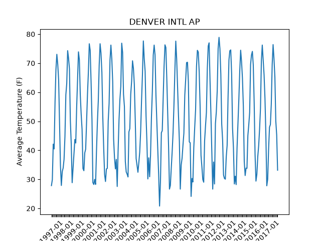

Note
Go to the end to download the full example code.
Basic ACIS Web Services Usage
Siphon’s simplewebservice support also includes the ability to query the Regional Climate Centers’ ACIS data servers. ACIS data provides daily records for most station networks in the U.S. and is updated hourly.
In this example we will be querying the service for 20 years of temperature data from Denver International Airport.
import matplotlib.pyplot as plt
from siphon.simplewebservice.acis import acis_request
First, we need to assemble a dictionary containing the information we want. For this example we want the average temperature at Denver International (KDEN) from January 1, 1997 to December 1, 2017. While we could get the daily data, we will instead request the monthly averages, which the remote service will find for us.
parameters = {'sid': 'KDEN', 'sdate': '19970101', 'edate': '20171231', 'elems': [
{'name': 'avgt', 'interval': 'mly', 'duration': 'mly', 'reduce': 'mean'}]}
These parameters are used to specify what kind of data we want. We are formatting this as a dictionary, the acis_request function will handle the conversion of this into a JSON string for us!
As we explain how this dictionary is formatted, feel free to follow along using the API documentation here :http://www.rcc-acis.org/docs_webservices.html
The first section of the parameters dictionary is focused on the station and period of interest. We have a ‘sid’ element where the airport identifier is, and sdate/edate which correspond to the starting and ending dates of the period of interest.
The ‘elems’ list contains individual dictionaries of elements (variables) of interest. In this example we are requesting the average monthly temperature. If we also wanted the minimum temperature, we would simply add an additional dictionary to the ‘elems’ list.
Now that we have assembled our dictionary, we need to decide what type of request we are making. You can request meta data (information about the station), station data (data from an individual station), data from multiple stations, or even images of pre-prepared data.
In this case we are interested in a single station, so we will be using the method set aside for this called, ‘StnData’.
method = 'StnData'
Now that we have our request information ready, we can call the acis_request function and receive our data!
The data is also returned in a dictionary format, decoded from a JSON string.
print(my_data)
{'meta': {'uid': 137, 'll': [-104.65623, 39.84657], 'sids': ['03017 1', '052211 2', 'DEN 3', '72565 4', 'KDEN 5', 'USW00003017 6', 'DEN 7', 'USW00003017 32'], 'state': 'CO', 'elev': 5404.0, 'name': 'DENVER INTL AP'}, 'data': [['1997-01', '27.85'], ['1997-02', '29.91'], ['1997-03', '42.13'], ['1997-04', '40.48'], ['1997-05', '56.60'], ['1997-06', '67.82'], ['1997-07', '73.05'], ['1997-08', '69.63'], ['1997-09', '64.23'], ['1997-10', '49.63'], ['1997-11', '34.82'], ['1997-12', '27.90'], ['1998-01', '32.66'], ['1998-02', '33.91'], ['1998-03', '36.87'], ['1998-04', '44.77'], ['1998-05', '59.13'], ['1998-06', '63.02'], ['1998-07', '74.31'], ['1998-08', '71.73'], ['1998-09', '67.98'], ['1998-10', '50.18'], ['1998-11', '42.08'], ['1998-12', '28.85'], ['1999-01', '33.71'], ['1999-02', '38.62'], ['1999-03', '43.73'], ['1999-04', '42.52'], ['1999-05', '54.81'], ['1999-06', '64.22'], ['1999-07', '73.90'], ['1999-08', '71.19'], ['1999-09', '59.23'], ['1999-10', '52.45'], ['1999-11', '47.22'], ['1999-12', '33.74'], ['2000-01', '32.98'], ['2000-02', '39.14'], ['2000-03', '40.39'], ['2000-04', '49.78'], ['2000-05', '59.19'], ['2000-06', '66.93'], ['2000-07', '76.68'], ['2000-08', '74.47'], ['2000-09', '63.57'], ['2000-10', '50.50'], ['2000-11', '28.90'], ['2000-12', '28.24'], ['2001-01', '30.00'], ['2001-02', '28.27'], ['2001-03', '39.73'], ['2001-04', '49.55'], ['2001-05', '57.03'], ['2001-06', '69.33'], ['2001-07', '76.69'], ['2001-08', '73.45'], ['2001-09', '66.77'], ['2001-10', '51.45'], ['2001-11', '40.87'], ['2001-12', '31.68'], ['2002-01', '29.27'], ['2002-02', '33.57'], ['2002-03', '33.79'], ['2002-04', '50.02'], ['2002-05', '56.13'], ['2002-06', '71.13'], ['2002-07', '76.23'], ['2002-08', '71.50'], ['2002-09', '63.63'], ['2002-10', '43.90'], ['2002-11', '37.48'], ['2002-12', '33.61'], ['2003-01', '36.89'], ['2003-02', '27.55'], ['2003-03', '39.87'], ['2003-04', '50.42'], ['2003-05', '57.52'], ['2003-06', '62.12'], ['2003-07', '76.89'], ['2003-08', '73.69'], ['2003-09', '59.30'], ['2003-10', '55.08'], ['2003-11', '36.18'], ['2003-12', '32.55'], ['2004-01', '31.82'], ['2004-02', '30.84'], ['2004-03', '46.35'], ['2004-04', '47.47'], ['2004-05', '59.32'], ['2004-06', '63.72'], ['2004-07', '70.82'], ['2004-08', '68.21'], ['2004-09', '62.67'], ['2004-10', '50.82'], ['2004-11', '37.17'], ['2004-12', '34.84'], ['2005-01', '32.45'], ['2005-02', '35.75'], ['2005-03', '39.42'], ['2005-04', '46.38'], ['2005-05', '56.98'], ['2005-06', '65.98'], ['2005-07', '77.66'], ['2005-08', '71.56'], ['2005-09', '67.15'], ['2005-10', '51.95'], ['2005-11', '42.48'], ['2005-12', '30.15'], ['2006-01', '37.42'], ['2006-02', '30.89'], ['2006-03', '38.39'], ['2006-04', '51.50'], ['2006-05', '60.32'], ['2006-06', '72.80'], ['2006-07', '76.23'], ['2006-08', '72.82'], ['2006-09', '58.90'], ['2006-10', '49.47'], ['2006-11', '40.47'], ['2006-12', '31.66'], ['2007-01', '20.81'], ['2007-02', '29.02'], ['2007-03', '46.05'], ['2007-04', '46.77'], ['2007-05', '58.00'], ['2007-06', '68.83'], ['2007-07', '76.32'], ['2007-08', '75.39'], ['2007-09', '65.07'], ['2007-10', '53.50'], ['2007-11', '41.37'], ['2007-12', '26.66'], ['2008-01', '27.90'], ['2008-02', '33.91'], ['2008-03', '39.53'], ['2008-04', '46.12'], ['2008-05', '55.84'], ['2008-06', '67.42'], ['2008-07', '77.60'], ['2008-08', '71.42'], ['2008-09', '61.75'], ['2008-10', '52.08'], ['2008-11', '43.05'], ['2008-12', '26.65'], ['2009-01', '34.89'], ['2009-02', '37.32'], ['2009-03', '41.81'], ['2009-04', '45.92'], ['2009-05', '58.98'], ['2009-06', '64.42'], ['2009-07', '70.21'], ['2009-08', '70.31'], ['2009-09', '63.45'], ['2009-10', '42.90'], ['2009-11', '42.60'], ['2009-12', '24.13'], ['2010-01', '30.31'], ['2010-02', '29.11'], ['2010-03', '40.98'], ['2010-04', '47.77'], ['2010-05', '54.00'], ['2010-06', '68.85'], ['2010-07', '74.42'], ['2010-08', '73.81'], ['2010-09', '66.97'], ['2010-10', '55.29'], ['2010-11', '38.27'], ['2010-12', '34.26'], ['2011-01', '29.94'], ['2011-02', '29.02'], ['2011-03', '43.26'], ['2011-04', '48.37'], ['2011-05', '53.06'], ['2011-06', '68.17'], ['2011-07', '75.90'], ['2011-08', '77.00'], ['2011-09', '64.23'], ['2011-10', '52.58'], ['2011-11', '39.48'], ['2011-12', '26.65'], ['2012-01', '35.98'], ['2012-02', '28.41'], ['2012-03', '49.18'], ['2012-04', '53.28'], ['2012-05', '60.48'], ['2012-06', '75.02'], ['2012-07', '78.89'], ['2012-08', '74.97'], ['2012-09', '66.28'], ['2012-10', '49.03'], ['2012-11', '43.48'], ['2012-12', '31.50'], ['2013-01', '30.34'], ['2013-02', '30.07'], ['2013-03', '37.69'], ['2013-04', '41.70'], ['2013-05', '57.92'], ['2013-06', '71.08'], ['2013-07', '74.29'], ['2013-08', '74.56'], ['2013-09', '66.40'], ['2013-10', '47.74'], ['2013-11', '40.90'], ['2013-12', '28.42'], ['2014-01', '31.08'], ['2014-02', '28.20'], ['2014-03', '40.87'], ['2014-04', '49.02'], ['2014-05', '57.53'], ['2014-06', '67.28'], ['2014-07', '74.47'], ['2014-08', '70.58'], ['2014-09', '64.75'], ['2014-10', '55.10'], ['2014-11', '36.20'], ['2014-12', '31.32'], ['2015-01', '33.87'], ['2015-02', '33.80'], ['2015-03', '45.03'], ['2015-04', '48.72'], ['2015-05', '53.02'], ['2015-06', '69.50'], ['2015-07', '72.76'], ['2015-08', '74.05'], ['2015-09', '69.38'], ['2015-10', '56.45'], ['2015-11', '38.45'], ['2015-12', '29.40'], ['2016-01', '31.79'], ['2016-02', '37.84'], ['2016-03', '41.60'], ['2016-04', '47.22'], ['2016-05', '54.39'], ['2016-06', '70.82'], ['2016-07', '76.24'], ['2016-08', '71.24'], ['2016-09', '65.97'], ['2016-10', '57.81'], ['2016-11', '45.13'], ['2016-12', '27.79'], ['2017-01', '30.02'], ['2017-02', '40.25'], ['2017-03', '47.94'], ['2017-04', '48.87'], ['2017-05', '55.94'], ['2017-06', '69.52'], ['2017-07', '76.40'], ['2017-08', '71.47'], ['2017-09', '65.12'], ['2017-10', '50.11'], ['2017-11', '45.27'], ['2017-12', '33.16']]}
We can see there are two parts to this data: The metadata, and the data. The metadata can be useful in mapping the observations (We’ll do this in a later example).
To wrap this example up, we are going to do a simple line graph of this 30 year temperature data using MatPlotLib! Notice that the data is decoded as a string, so you should convert those back into numbers before use.
Note: Missing data is recorded as M!
stn_name = my_data['meta']['name']
avgt = []
dates = []
for obs in my_data['data']:
if obs[0].endswith('01'):
dates.append(obs[0])
else:
dates.append('')
avgt.append(float(obs[1]))
X = list(range(len(avgt)))
plt.title(stn_name)
plt.ylabel('Average Temperature (F)')
plt.plot(X, avgt)
plt.xticks(X, dates, rotation=45)
plt.show()

Total running time of the script: (0 minutes 0.549 seconds)